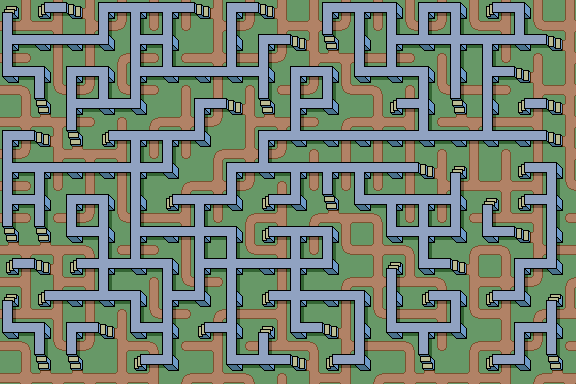
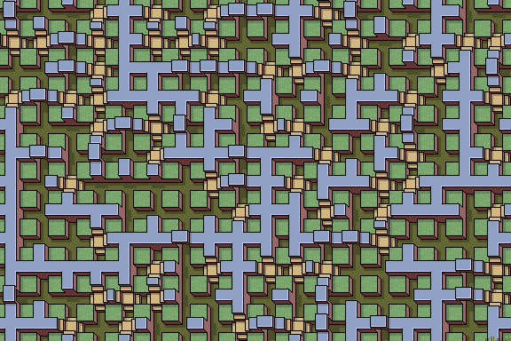

Positioned Path
Paths cross the tile edge in one of two positions. This again creates 2^4=16 tiles. There are no equivalent corner tilesets as the path has to pass through the corner and so can't be repositioned.
Tilesets
Here are 'Lattice', 'Walkway', 'Groove' and 'Quad' tilesets. Every tile has two different types of edge, corresponding to 16 different tiles as usual. Every edge has one path, but it can be in two positions. Blue-0 edges have a 'lower' or right-hand-side positioned path (away from the origin). Yellow-1 edges have an 'upper 'or left-hand-side positioned path (closer to the origin).
| 0 | 1 | 2 | 3 | 4 | 5 | 6 | 7 | 8 | 9 | 10 | 11 | 12 | 13 | 14 | 15 |
See Stage for random arrays.
Stage: Random Lattice Tiles

The Walkway tileset has a lower and an upper path depending on its edge position. No edge has both paths or no paths.
If you follow the maze it can be quite difficult to find a path between two points. Some areas can never be reached because the maze is not guaranteed to be fully connected. All paths wrap around the stage edges. You can swop between high and low paths if steps are available.
Stage: Random Walkway Tiles
Stage: Random Brench Tiles
